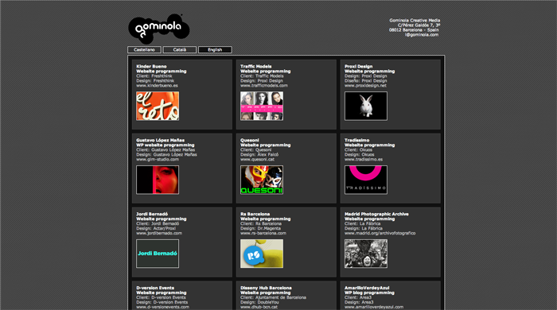
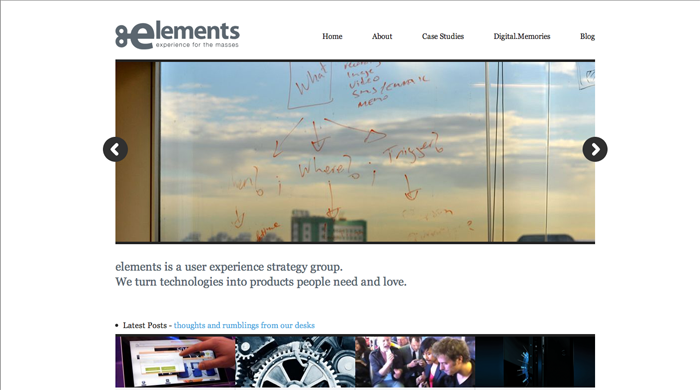

Neema Mahdavi
Portfolio Analysis
| Brand | 'Swedish'/European - The site gives the Swedish design feel, the same as IKEA.
Crisp, clean design. Minimal - The site is very, very basic. It only has an image, as simple as you can get. Futuristic - I get a "futuristic" vibe from the site because it is different and abnormal from the usual layout. |
| Functionality | If the function of the site was to show a set number of slides - it does its job. The site only shows a few design examples and ends with the email of the designer. There is nothing else on the site -- only images. There is no text on the site describing the images. |
| Interaction | The side of the site has a white arrow that blends into the background. Clicking it navigates through the slides, then repeating when you have come to the end of the slides. This is the only interactive part of the site. Like I said before, there is nothing on the site. |
| Navigation | Navigation on this site is pretty bad. There are no words on this page at all, the user is always forced to go forwards for 13 "pages" before it cycles to the beginning again. |
| Image |
| Brand | Friendly - they try to describe everything to the user and want to build
relationships and use friendlier words.
Professional - They are a corporation and a business. Simple - They don't use a lot of colors, and all the colors are slightly desaturated, so it feels like they concentrate on minimal and clean design. |
| Functionality | Their site seems pretty functional. They have everything laid out in a way where you can find everything you need. They have a place to go see samples of their work, a section on contacting them, and a blog. They cover all the fundamental functions they need. Every page on the site has the same designing and branding. |
| Interaction | As far as interaction, the site requires the user to do everything. There is no automation. The site is entirely click-only. Although, when the user is viewing the work section on the home page, it highlights the text the mouse is hovering over and dims the other texts |
| Navigation | There is a navigation bar up on the top of the page, and clicking each one takes you exactly there. The pages are also named after their navigation bar name i.e. Work takes you to "Our Work." The navigation bar never changes so the user may always go back. |
| Image |
| Brand | Techy - They try to market themselves as programmers and coders
and use that terminology on their page.
Mature - they have a lot of projects and want to show it off so they want to show that they are experienced and mature. Bland - This probably wasn't their intent, but I also thought the site was bland, so that's part of their identity |
| Functionality | The site is available in three languages, clicking one language keeps the site the same and just updates the text. It's useful for visitors who don't speak the main languages the site is in. Contact info is also available on the top of the webpage. |
| Interaction | All of the projects the agency has done are available on one page so all the visitor has to do is scroll all the way down. Simplifies the users tasks so they don't have to navigate as much. |
| Navigation | The site is only one page, making navigation very simple. The user only has to choose which language, but the layout and navigation of the page doesn't change. It's easy to see we're on the home page and there is no need to navigate elsewhere since all information is available on this page. |
| Image |  |
| Brand | Professional - The name of the company is Consulo and they
have a few general "business"/corporate words, so it gives
the site a very professional personality. I think the site might be
focused on selling its products to large businesses (or at least
it feels that way.)
Worldwide - Some of the articles on this site are in Greek, and they also have an option to chose what language the site is in. I think they want to show that they are an international company and use it to their advantage by showing themselves like that . Somethingelse - |
| Functionality | Cool |
| Interaction | Cool |
| Navigation | Cool |
| Image |
| Brand | Artistic - The general vibe of the site is that she is an artist. Experienced - by writing all her different mediums as navigation items, it makes her seem like she's experienced in her field(which she may be) and that she has been doing a lot of work. Professional - She used her job titles in her brief introductory text on the home page, which gives her site a professional personality. |
| Functionality | I don't think the site was too functional. They had links and a small gallery to view each project, but there wasn't sufficient information regarding each project, like how other pages had white pages or just general info about the project -- she only had a couple of pictures. |
| Interaction | The site is pretty static, you just click and view images. The only thing was a few pages (I don't know which ones because the site didn't tell me) had effects on the images when you hovered over them. |
| Navigation | Navigation to get to a page is easy, you just click the page you want to go to. The only problem is that none of the pages have headers telling the visitors which page they are at and what samples they are seeing. There is no internal navigation in the site except for the left-bar. |
| Image |
| Brand | Friendly- The testimonials on his site give insight to his
character which is perceived to be friendly and helpful. Informal - but still a little professional. By using really informal language, such as "kickass" he retains his friendliness as well. Dedication - He has made clear his design and development is for only one platform, Wordpress. This shows dedication and commitment to that technology. |
| Functionality | The site shows the examples of his work right next to his testimonials and also has examples of his work all over without having to navigate elsewhere. This way he gets to advertise his work immediately and sell the visitor to his work. Gets the job done quickly, and if the user wants to see more, they can navigate to more examples of his work pretty easily. Contacting him is visible - he has a tab on top navigation bar. |
| Interaction | There is a showcase box on the central box of the page with animations that scroll through his design work, but the user may also use the arrows to control the rate of change and navigate through examples themselves. Going over the testimonial screenshots dims the color and shows a magnifying class that means the user can click it to get a closer view. |
| Navigation | Pretty easy. Again, since this is Wordpress, it automatically puts links and headers in all places so that there are no orphan pages. All the main pages that people would want to see are on the top navigation bar. |
| Image |
| Brand | Creative - The site is coded differently and creatively,
which is refreshing. The main navigation through the site
is all text based and only the articles have images. New - Again, being creative with the coding brings a new view on the site, one that isn't very common giving a new-feeling personality for the site. Fun - The navigation and links are labeled very uncommonly, like "the real jim shady," playing on pop culture and giving it a different feel from other websites. |
| Functionality | It's a portfolio site, so it accomplishes its task of displaying the creative work. The site is completely minimal and only shows images when it needs to. It's a cool site, but maybe he should have shown more images since he is a graphic artist and that is what he wants to advertise. |
| Interaction | Even though this is a portfolio of a graphic designer, the interaction on the site is really cool. By running the cursor over the links, each one highlights a different color. Clicking a link opens the article underneath, without taking you to a new page, making navigation easier. |
| Navigation | Pretty simple. Clicking a link opens it in the same page so you can scroll back up to go to where you where. To go another page, you can just use the navbar, which takes you to a page that is titled with the exact page you're on, making navigation easy. |
| Image |
| Brand | International - They have offices in other countries,
it adds to their brand personality that they operate
worldwide. Mysterious- they don't really say exactly what they have been working on, but they show snippets and some previews, so they want to have an aura of mystery about them as their personality. |
| Functionality | The site seems to be made with Wordpress, and WP usually does a good job of organizing content. They have a footer that shows the various ways of contacting them. The secondary boxes shows snippets of partial-projects they have been working on. It's not clear exactly what they have completed, but they show they work. |
| Interaction | When the visitor change's the central boxes banner image by pressing the arrows(left/right) the text underneath the image dynamically changes to provide a caption of the image or let the user know a little about the company.' |
| Navigation | The site is kind of confusing to navigate through. The boxes on the bottom of the home page show different 'ramblings' that link to different posts throughout the different pages, but if I wanted to go to a post by looking for it, I would have to go to one of the pages, but I don't know which one I should go to. The pages are named About, Case Studies, and Digital.Memories. I don't know which one would have more examples of their work. |
| Image |  |
| Brand | Cool - Even though they are a business, they are really
casual and cool about the way they conduct their business. Fresh - Throughout the site, they're talking about how they 'not only' do some things, they also enhance, so they're bringing more to the table than others. Professional - They are a business and they have this vibe about their page which gives it a professional feel. |
| Functionality | Cool |
| Interaction | They have a pretty fun feature on their site. There is a button that says "Ahh it's too bright" and clicking it changes the background to black. When it's black the icon changes to "Do you guys want the lights on?" They also have a showcase in the central box that uses javascript and a timer to switch the slides showcasing their products and solutions. The interactivity isn't too intensive and doesn't take away from the page. |
| Navigation | There is a clear navigation bar that's consistent throughout the entire site. No matter where you are, either the header will tell you are, or a little gif image underneath the navbar will tell you which page you're on. |
| Image |
| Brand | Cool - This portfolio shows off a lot of new things.
It's uncommon to see a portflio like this.
It is modern -- it breaks out of the usual layout
that portfolio sites have and the regular layout sites
have and advances into a whole new type of navigation.
Hip - A lot of different design styles are shown, his designs are hip and trendy and appeal to that culture. Edgy - They use a lot of different technologies, including the way that you have to navigate through it. |
| Functionality | The site is meant to show off the work of this graphic artist and the site does the job pretty well. The navigation between projects and photos is pretty fun. The controls are easy to understand and use |
| Interaction | The logo is really fun. Hovering over it inverts the colors and plays a quick animation. The interaction of navigating through the site provides for a much better experience than regular menu bar-based navigation. |
| Navigation | The navigation through the site is pretty fun. You scroll vertically to view different projects, and horizontally to view each projects screenshots. You may also use the arrow keys on the left or the arrows. It's not really important knowing exactly what project you're looking at since it scrolls through all of them, but going back on each slide is easy, just navigate in the opposite direction. |
| Image |
My Sketch
The G boxes represent Graphics and Images, the T represents texts,
and the S represents the Sidebar and all the items that belong there.
The bars on the top and bottom are the header and footer.